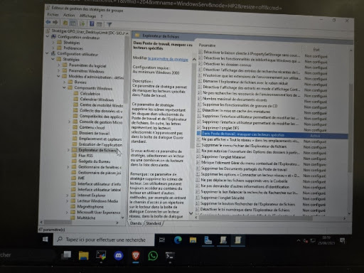
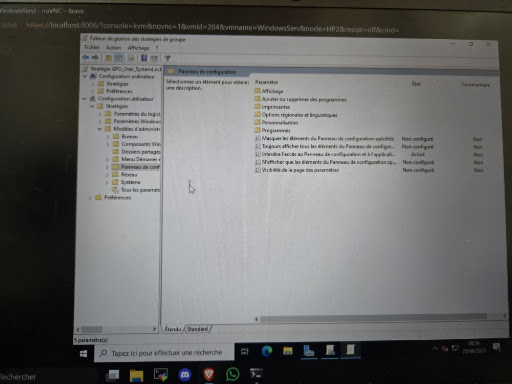
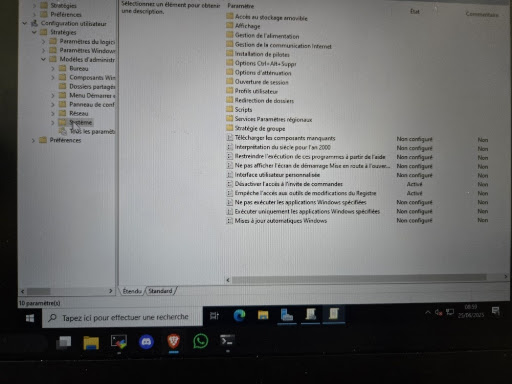

Dans le cadre de l'administration du domaine Windows Server, j'ai été chargé de sécuriser et de standardiser l'environnement de travail des utilisateurs. L'objectif était de limiter les erreurs de manipulation et de renforcer la sécurité des postes clients (Endpoints) en restreignant l'accès aux paramètres critiques du système.


